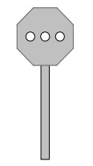

Informacje ogólne
1. Tarcze rozrządowe Tr stosuje się do sterowania rozrządem na górkach rozrządowych.
Zaleca się stosowanie tarcz rozrządowych świetlnych.
2. Stosuje się następujące tarcze rozrządowe:
1) tarcze rozrządowe kształtowe , które nadają sygnały za pomocą podłużnego ruchomego
białego ramienia z czarną obwódką, oświetlonego w porze nocnej, obracającego się na tle
nieruchomej okrągłej, czarnej tarczy z białą obwódką, umieszczonej na maszcie,
zwróconego w kierunku lokomotywy pchającej tabor kolejowy;
2) tarcze rozrządowe świetlne, które nadają sygnały za pomocą umieszczonych na maszcie
latarń
3. Tarcze rozrządowe ustawia się na szczycie górki rozrządowej, a w razie potrzeby stosuje się
ich powtarzacze przed grzbietem górki. Powtarzacze wskazują takie same sygnały, jak
tarcze ustawione na szczycie górki rozrządowej.
4. Jeżeli na górce rozrządowej są dwa tory, można stosować oddzielne tarcze rozrządowe
i ich powtarzacze, odnoszące się do każdego z tych torów.
5. Jeżeli nie można nastawić na tarczy rozrządowej sygnału zezwalającego na pchanie taboru
kolejowego poza tarczę, to pchanie taboru kolejowego jest dozwolone tylko wówczas, gdy
upoważniony do tego pracownik, po uprzednim ustnym poinformowaniu drużyny trakcyjnej,
że pchanie jest dozwolone poza tarczę, da ręczny sygnał Rm 1 „Do mnie” lub polecenie
pchania będzie przekazane za pomocą megafonu lub innego środka łączności.
6. Tarcze rozrządowe należy oznaczać literami Tr
7. Wskazania na tarczy rozrządowej powinny być
widoczne wzdłuż całej drogi spychania składu, poprzez zastosowanie odpowiedniej
ilości tarcz rozrządowych.
8. Tarczę rozrządową należy ustawiać przy torze na grzbiecie górki rozrządowej. w razie
potrzeby może być ustawionych kilka tarcz rozrządowych wzdłuż torów, z których
prowadzony jest rozrząd. w tym przypadku wskazania na wszystkich tarczach
rozrządowych powinny być jednakowe
9. Sygnały na tarczy rozrządowej mogą być wygaszane na czas przerwy w rozrządzaniu, po
zepchnięciu składu pociągu z górki rozrządowej.
Przykładowy sygnał nadawany przez tarcze rozrządowe świetlne
C
1. Sygnał Rt1 Pchanie zabronione.
Dzienny i nocny
Szereg białych świateł tworzących linię poziomą

Źródło
Instrukcja Ie-1
Instrukcja Ie-4